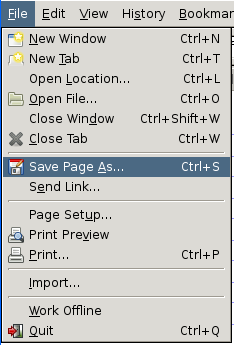
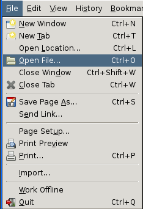

Actually none of these questions are frequently asked, I am just making these up.
Indeed it is possible for me to read your letters. An evil network operator between you on my server in London could do the same since site does not use SSL. Though I do not read your letters and you will just have to trust me that this is the case. URLs (which only you should know) to your generated PDF letter are deleted daily.
Here is the source code. It relies on xetex.
The author of this simple script is Kai Hendry. Be nice.

